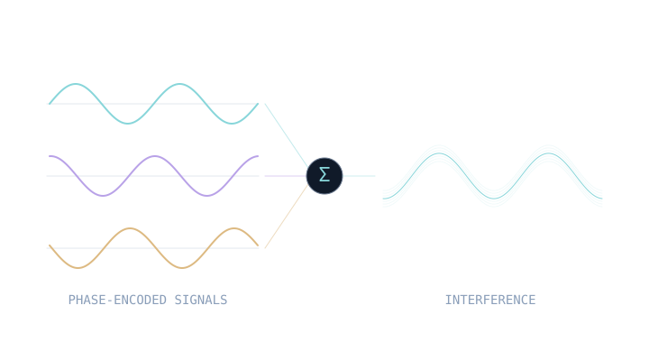
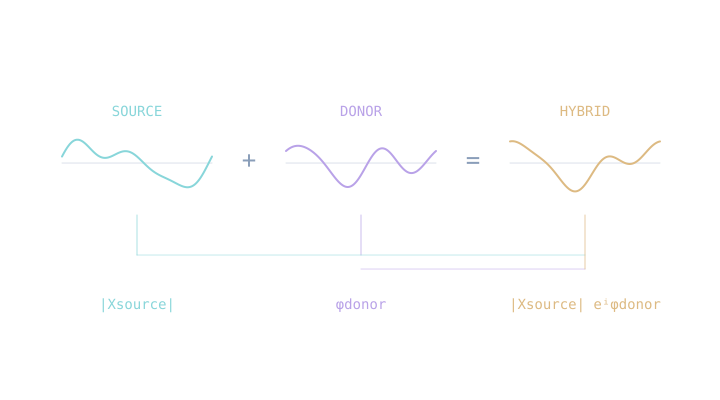
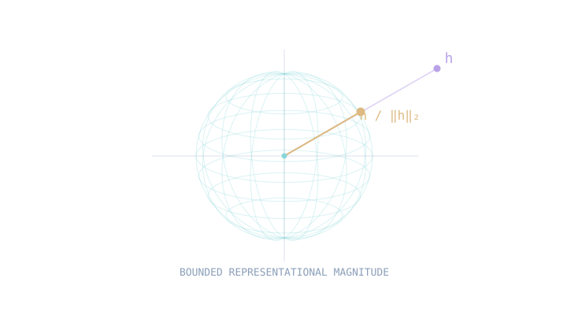
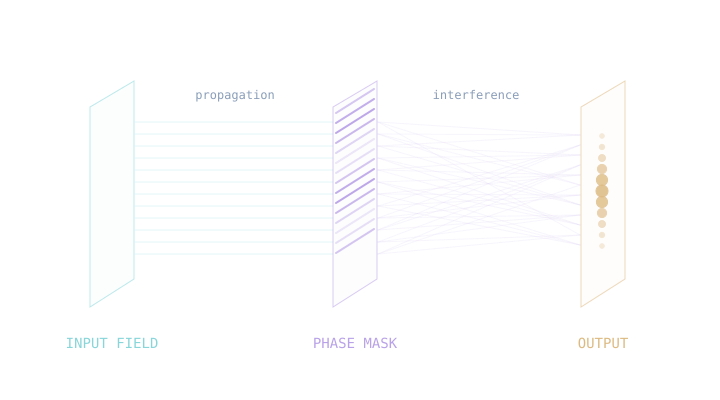
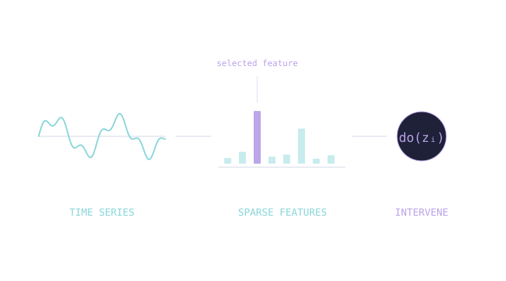

Research with PRAIR
I’m working with Atticus Geiger through the PRAIR group and collaborating with Patrick Lutz on mechanistic interpretability and the internal algorithms learned by AI models.
Independent AI researcher
I study how neural networks represent and process information—and use what I find to change how they learn.
Mechanistic interpretability · Phase & geometry · Architecture design
Explore my researchAn illustration of phase and interference.
Updates / Now
I’m working with Atticus Geiger through the PRAIR group and collaborating with Patrick Lutz on mechanistic interpretability and the internal algorithms learned by AI models.
A new manuscript is in preparation. More details when the work is public.
01 / Selected work

Complex-valued sequence modeling · schematicSemantic Phase Locking and Interference in Neural Networks
What can phase contribute to language modeling? PRISM explores complex-valued sequence processing with FFT mixing and phase-preserving operations.

Source magnitude + donor phase · schematicLayer-resolved phase and magnitude transplants test what carries class identity inside image classifiers. In the tested models, identity follows phase or sign.

Constraining representation geometry · schematicChanging residual geometry and attention routing tests why generalization is delayed. Gains on modular addition depend on geometry–task alignment and do not extend to non-commutative S₅.

Passive diffractive sequence mixing · schematicTrainable phase masks connect sequence modeling to passive optical computation, studied through differentiable simulation and causal controls for long-horizon forecasting.

Sparse features and causal probing · schematicSparse autoencoders and causal interventions examine whether PatchTST relies on superposed features for competitive performance on standard forecasting benchmarks.
02 / Research approach
I connect mechanistic analysis with changes to architecture and training. Each intervention is a way to test an explanation.
Use phase, Fourier structure, geometry, and causal probing to investigate how information is encoded and used.
Features · Circuits · SymmetriesChange internal variables, architectural constraints, or training data. Measure which predictions survive the intervention.
Causal interventions · Training dynamicsTranslate supported mechanisms into phase-preserving architectures, geometric inductive biases, and optical computation.
Architectures · Inductive biases · OpticsHow training data shapes the internal algorithms that language models learn.
Work in progress03 / About
Independent AI researcher · Turkey
I work on mechanistic interpretability and architecture design, with a particular interest in phase, geometry, and the structure of computation.
My research spans language, vision, learning dynamics, time series, and optical computing. I work with Atticus Geiger through the PRAIR group and collaborate with Patrick Lutz on the causal analysis of AI models and the algorithms they discover.
B.Sc. Computer Engineering Düzce University
AI Engineer & Lead Researcher isTechSoft
Get in touch
Let’s compare notes.